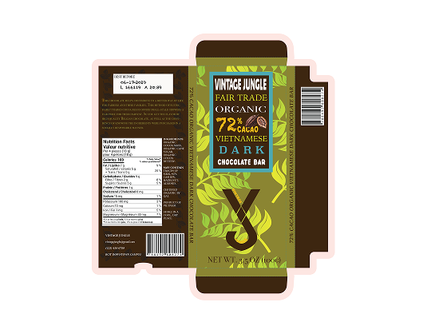
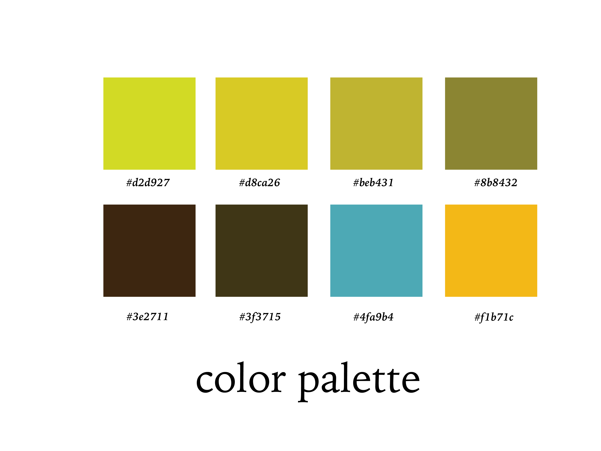
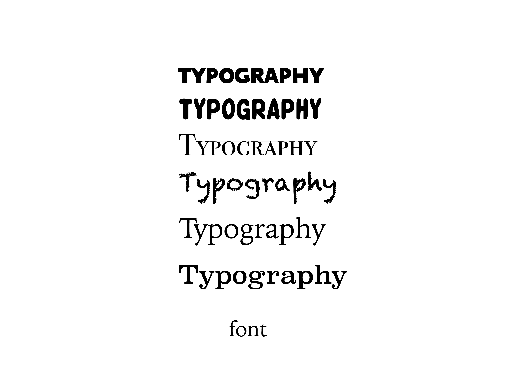
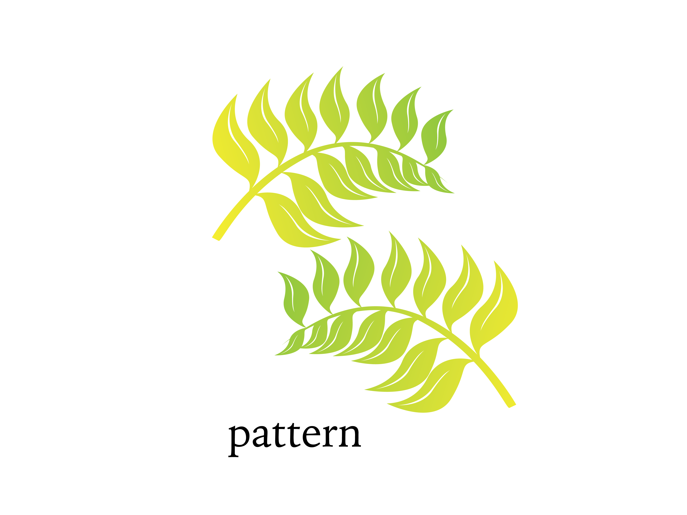
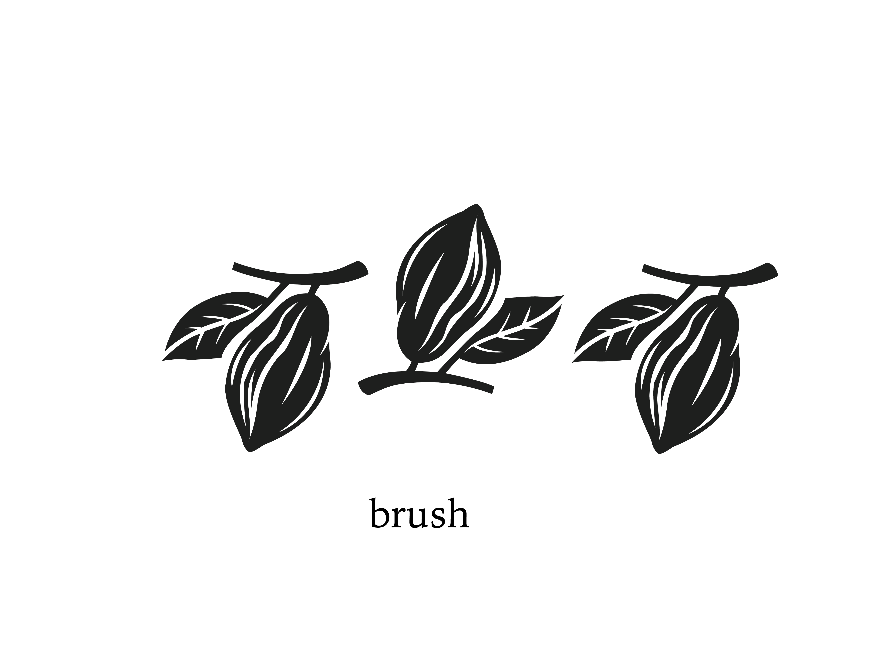
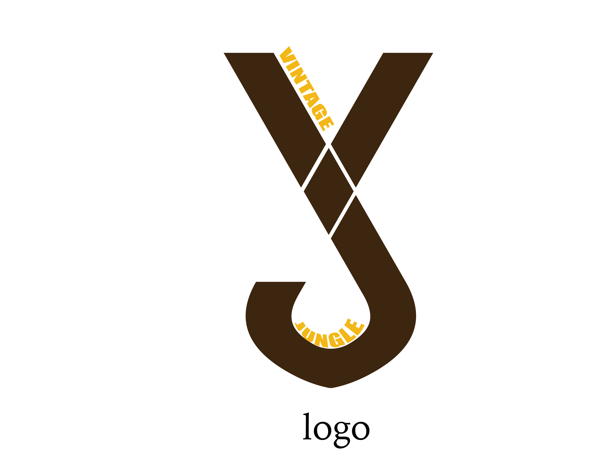

OVERVIEW
Vintage Jungle is a concept-driven branding and packaging project that explores how illustration-based design can create a cohesive visual identity for a fictional chocolate brand.


Vintage Jungle is a branding and packaging project for a fictional chocolate brand inspired by jungle aesthetics, using organic patterns and natural color palettes to highlight freshness and raw ingredients.
Vintage Jungle is a concept-driven branding and packaging project that explores how illustration-based design can create a cohesive visual identity for a fictional chocolate brand.
The goal of this project was to develop a visually engaging packaging system that reflects natural ingredients, minimal processing, and strong brand consistency through custom logo, pattern, and brush design.


The visual system was developed through a jungle-inspired palette and typography exploration. Earthy greens and browns were selected to reinforce the brand’s connection to forests, cacao, and organic materials, while the typography helped define a bold but natural brand personality.


Custom patterns and brushes were created using leaf and cacao-inspired shapes to build a consistent illustration language across the packaging. These graphic elements helped make the brand feel more immersive, decorative, and connected to nature.
The logo was designed as a typographic combination of the letters “V” and “J,” representing the abbreviation of Vintage Jungle. Its simple construction supports the brand’s bold identity while remaining flexible across packaging applications.

The final packaging layout was developed in Adobe Illustrator using a dieline structure, allowing the logo, nutritional information, illustrations, and supporting visuals to work together as a unified system. This helped the brand communicate freshness, natural ingredients, and strong shelf presence.
This project strengthened my understanding of how custom illustration assets can shape a brand’s visual identity. I learned that a simple concept can become much more distinctive when logo, pattern, color, and packaging are developed as one consistent system.